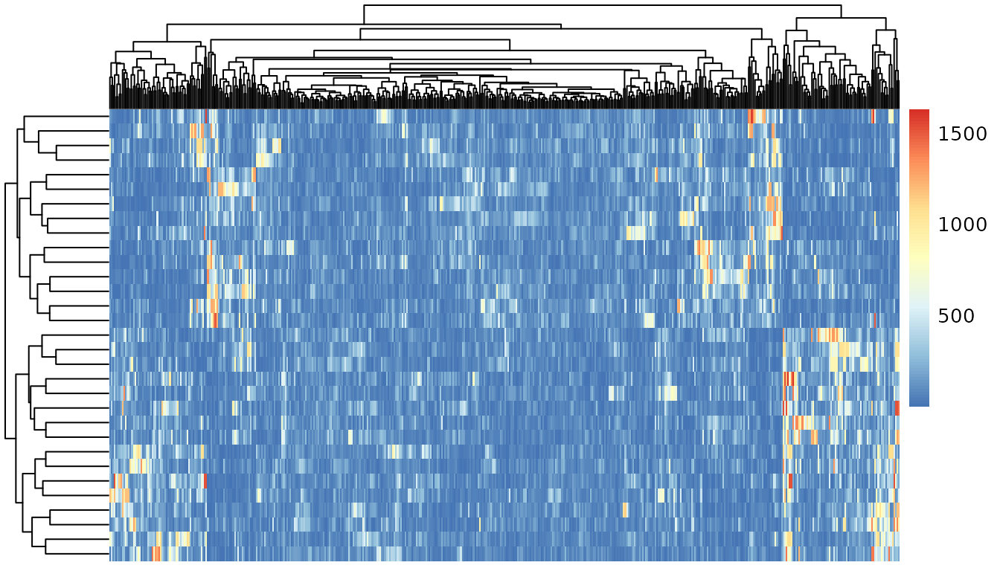
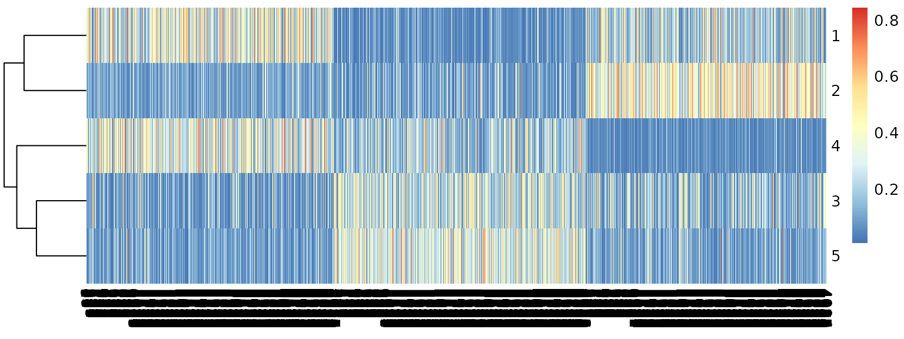
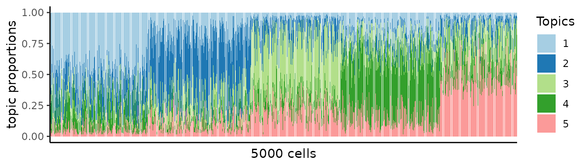
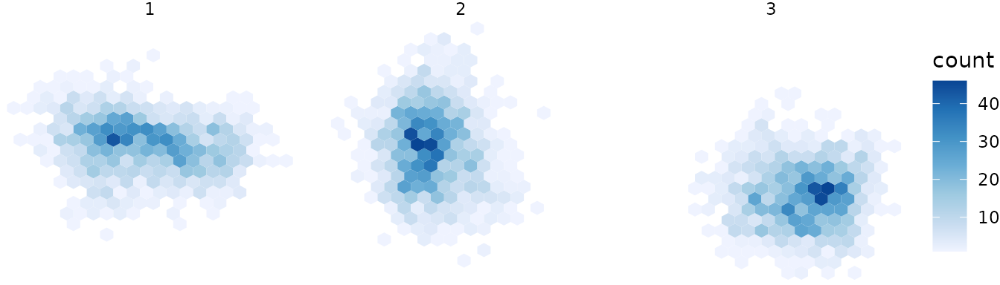

1. Introduction: We want cell topic estimation ASAP
Yongjin Park
introduction.Rmd
library(asapR)
set.seed(1331)
d <- 500
n <- 5000
.rnorm <- function(d1,d2) matrix(rnorm(d1 * d2), d1, d2)
uu <- .rnorm(d, 3)
vv <- .rnorm(n, 3)
Y <- apply(uu %*% t(vv), 2, scale) + .rnorm(d, n) * 3
Y[Y < 0] <- 0
gg <- order(apply(uu,1,which.max))
kk <- apply(vv,1,which.max)
asap.data <- fileset.list(tempfile())
asap.data <- write.sparse(Matrix::Matrix(Y, sparse = T),
1:nrow(Y),
1:ncol(Y),
asap.data$hdr)## Writing MTX ...## Done
.info <- mmutil_info(asap.data$mtx)How can we estimate cell topic proportions ASAP?
Step 1: Create a pseudo-bulk (PB) matrix by collapsing (perhaps) “redundant” cells into one sample.
Step 2: Perform non-negative matrix factorization (NMF) on the PB matrix.
Step 3: Recalibrate cell-level data with a fixed dictionary matrix.
Step 1: Fast pseudo-bulk sampling
.bulk <- asap_random_bulk_data(asap.data$mtx,
asap.data$row,
asap.data$col,
asap.data$idx,
num_factors = 5)We can squeeze 5000 cells into 32 pseudo-bulk samples.
Y <- stretch_matrix_columns(.bulk$PB)*100Some gene-gene correlation structures are preserved in the PB data.

Step 2: Non-negative Matrix Factorization to learn the definition of “topics”
.nmf <- asap_fit_nmf(Y,
maxK = 5,
max_iter = 200,
svd_init = TRUE,
verbose = FALSE)
names(.nmf)## [1] "log.likelihood" "std_log_x" "corr" "model"Some convenient routine to create the structure plot of a topic proportion matrix.
plot.struct <- function(.prop){
.order <- order(apply(.prop, 1, which.max))
.melt <- melt(.prop)
.melt$Var1 <- factor(.melt$Var1, .order)
ggplot(.melt, aes(Var1,value,fill=as.factor(Var2))) +
geom_bar(stat="identity") +
scale_fill_brewer("Topics", palette = "Paired") +
ylab("topic proportions")
}
.bulk.topic <- pmf2topic(.nmf$model$beta, .nmf$model$theta)
plot.struct(.bulk.topic$prop) +
xlab("pseudobulk samples")
Step 3. Cell-level recalibration to recover cell-level topic proportions
.stat <- asap_topic_stat(asap.data$mtx,
asap.data$row,
asap.data$col,
asap.data$idx,
log_x = .nmf$std_log_x,
.bulk$rownames)
R <- apply(.stat$corr, 2, scale)Topic correlation statistics are already very appealing.
par(mfrow=c(2,2))
for(k in 1:4){
plot(R[,k], R[,k+1],
col = kk+1, cex=.3,
xlab=paste("Std. Cor.", k),
ylab=paste("Std. Cor.", k + 1))
}
We can quantify topic proportions based on the correlation results.
.pmf <- asap_topic_pmf(.nmf$model$beta, R, .stat$colsum, max_iter = 10)
.topic <- pmf2topic(.pmf$beta, .pmf$theta)

plot.struct(.topic$prop) +
theme(axis.text.x = element_blank()) +
theme(axis.ticks.x = element_blank()) +
xlab(paste(nrow(R),"cells"))
.df <- data.frame(project.proportions(.topic$prop), kk)
ggplot(.df, aes(xx,yy)) +
theme_void() +
facet_grid(. ~ kk) +
geom_hex(bins=20) +
scale_fill_distiller(direction=1)